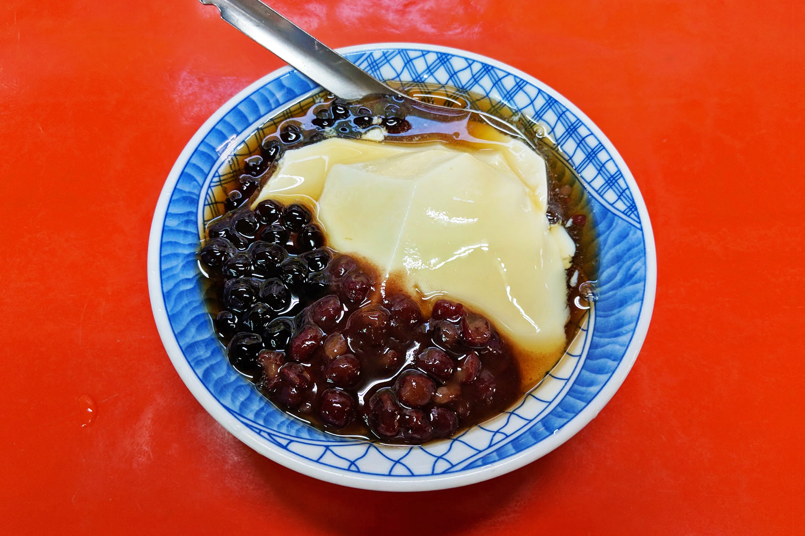

Xiao Chi: A comprehensive guide to street food in Taiwan
By Julius Tarng

There’s a saying in Taiwan, 「吃就對了」, and it’s often the advice I get when I visit a new city and ask my host for recommendations. It roughly translates to “just eat — you can’t go wrong”. I love this advice because it matches with the way I explore both cities and markets — comb every block on foot and eat anything that looks good.
小吃, meaning “little eats” a.k.a. street food, is available any time of the day in restaurants, shophouses with sidewalk tables, food carts or the night market. Wherever you stay, there’s likely several places to eat just around your block. Got jetlag? Most breakfast places open at the crack of dawn, and many night markets and midnight snack 宵夜 places are open late.
Like many other countries, Taiwanese cuisine emphasizes umami, sweetness, and deep frying as many things as you can. However, I’d like to introduce your palette to the most important element of Taiwanese food: QQ. To be Q is to be bouncy, chewy, squishy. If you’ve had fresh tapioca pearls in your bubble/boba/pearl milk tea, you’ve experienced QQ. If you’ve ever had sticky rice, you’ve experienced QQ. If you’ve ever had gummy bears or al dente pasta, you’ve almost experienced QQ.
While most people head to Taipei when they visit the country, I highly recommend pulling a day or two for a food tour of Tainan, the former capital and Taiwanese food mecca in the south. Several of the dishes below are best tried in Tainan, including ba wan, oyster omelette, and mi gao. Tainan is 1.5 hours from Taipei by high speed rail.
Xiao Chi 101
These are some of Taiwan’s most popular items and food exports that you can find in America. You might have had some of these already, but it’s worth seeking them out in their homeland.
黑糖珍珠奶茶 - Brown sugar bubble tea hei tang zhen zhu nai cha

Bubble/boba/pearl milk tea is probably the most famous Taiwanese export, but Taiwan really screwed up its branding and never standardized the translation (for the record, PMT is technically correct but who has time to say PMT). Most chains use syrups for sweetening, but find a shop that uses brown sugar with a fresh patch of pearls for optimal QQ. QQ potential: pearls.
鹽酥雞 - salt and pepper fried chicken yan su ji
Boneless, bite-sized, and twice fried. Most stalls will offer it along size a bunch of other stuff you can deep fry with the chicken. I recommend sweet potato fries and chicken butt (a fatty piece that comes from the rear end, my childhood favorite). QQ potential: guess what? Chicken butt.
牛肉麵 - beef noodle soup niu rou mian
The apex of noodle soups (okay, phở is pretty dang good, too), with large chunks of tender beef and crisp. You can choose clear (清燉) or spicy (紅燒) broth, and wide or thin noodles, as well as the mix of meat to tendon (I prefer all meat). ALWAYS choose spicy (it’s not spicy) and wide noodles. QQ potential: noodles semi al dente, and tendon if you get it.
蔥油餅 - scallion pancake cong you bing

Fried, flaky, and fragrant. You can have it on its own or stick stuff inside: eggs, basil, beef, ham — whatever your heart desires! The croissant of Taiwan uses oil instead of butter for max flakiness. QQ potential: the dough inside must be chewy and not dry.
掛包 - Taiwanese hamburger gua bao
Many ramen joints in America sell pork buns that are extremely similar to gua bao. Gua bao also uses pork belly, but adds crushed peanuts, cilantro, and a hit of sugar. QQ potential: the bun and pork belly.
胡椒餅 - black pepper bun hu jiao bing
Like a regular meat bun, but you spilled too much black pepper in the mix and also accidentally stuck it to the inside of the tandoor you happened to own. Baked at extremely high temperatures, black pepper buns are crispy on the outside, and juicy on the inside. QQ potential: the meat mixture as a giant chewy ball of umami.
Xiao Chi 102
Slightly less commonly known, but I end up eating each of these at least once every trip because they’re so good.
蛋餅 - egg pancake dan bing
My breakfast of choice. A staple found at any of the many breakfast spots in Taiwan that also sell soy milk, Chinese donuts, rice balls, shao bing pastry, and more. Similar to scallion pancake, but with an egg and not deep fried. QQ potential: dough.
油飯 - oil rice you fan

My absolute favorite comfort food. A dish that combines the Q of glutinous sticky rice and the umami of shiitake mushrooms and dried shrimp, ideally topped with cilantro. QQ potential: everything in this bowl of rice is Q.
米糕 - mi gao niu rou mian
Mi gao is similar to oil rice, and is also one of my favorite dishes. In addition to the mushrooms and dried shrimp, mi gao also often includes pork belly, fish floss and a side of sweet pickles. QQ potential: everything.
飯糰 - rice ball fan tuan
Like Japanese onigiri, it’s a ball of rice with magic inside. Like oil rice and mi gao, it also uses glutinous sticky rice, and common ingredients include pork floss, egg, pickles, and even a Chinese donut. You can find both savory and sweet rice balls at most stalls. QQ potential: rice.
綠豆薏仁 - mung bean and adlay soup lü dou yi ren
I’m upset, because mung bean is the worst translation for this delicious bean. In Chinese it’s “green bean”, and it’s the cousin of red bean, but because green beans the vegetable exists in English, we have to translate it to mung bean. While red bean soup is usually served hot in cold weather, mung bean soup is served chilled in the summer. With a slight sweetness and the Q texture of adlay, this is one of my favorite desserts. QQ potential: adlay. You can get it without adlay, but it’s a lot mushier in texture with only mung beans.
豆花 - silken tofu dou hua
Freshly made, this fluffy tofu, usually served with a simple syrup and soft peanuts, glides down your throat. Served hot or cold, and you can customize the heckin heck out of it. Red beans? Cool. Tapioca pearls? No problem. Mung bean and adlay soup? You’ll get some weird looks but okay. QQ potential: this is the exemption where the softer the tofu, the better. The Q will come from the ingredients you choose.
芋圓 - taro balls yu yuan
QQ! One of the most QQ desserts you can get. The purple ones are taro, and often come with the yellow sweet potato balls. It can be served with crushed ice, silken tofu, or grass jelly and can be found at many crushed ice dessert shops. This one is on grass jelly with a slightly sweet creamer. QQ potential: so Q the one chain I found outside of Taiwan that serves taro balls is named QQ.
Dr. Xiao Chi, PhD
If you’re ready to show off to your Taiwanese family and friends, tell them you tried and liked each of these dishes.
臭豆腐 - stinky tofu chou dou fu
Photo by LW Yang via Flickr/Creative Commons.
Yea, it smells bad, and it smells worse when they’re in the middle of deep frying it, which is when you’re likely in line for it. I swear it tastes good! It’s deep fried, garlicky spicy fermented goodness. Often served with a tangy Taiwanese pickled cabbage (or Taiwanese kimchi, if you will). Unlike the other stinky food, durian, stinky tofu pungence does not stick around long after you eat it, as it’s dwarfed by the smell of garlic. QQ potential: really varies depending on the style. I’ve had a slightly soft, soupier version that was extremely QQ.
肉圓 - ba wan dan bing
How would we take a regular meat bun and make it as QQ as possible? Replace rice flour with glutinous rice flour! One of the dishes that sparks the most Taiwanese pride, and you get extremely weird looks if you pronounce it in Mandarin instead of Taiwanese. You can find ba wan that are giant, and ba wan that are bite sized. Pictured are bite sized shrimp ba wan I had in Tainan. QQ potential: it is the definition of QQ.
蚵仔煎 - oyster omelette oh ah jian
Oyster omelettes originate from the Teochew region in China, and you can find many variants of it, including in Thailand. What makes the Taiwanese version unique is, you guessed it: it’s QQ as heck! Similar to ba wan, using glutinous rice flour mixed with the egg and oysters produces an insanely goopy and crispy texture that’s hard to resist, especially with a good sweet and sour sauce on top. QQ potential: c’mon.
腕粿 - bowled rice cake wah gweh
I swear this dish is impossible to photograph to look tasty. It’s a savory rice cake where pork, shiitakes, and other goodies are steamed with glutinous rice flour into a small bowl. You’ll get a tiny fork and hopefully instructions to carve around the edge of the cake, and then split it into four. I did not see these instructions until after my second time having it, so these photos really look unappetizing. It’s often served with a sweet and sour fish cake soup 魚羹. QQ potential: it’s like a solid block of QQ.
藥燉排骨 - medicinal rib stew yao dun pai gu
Chinese medicine is the bane of every child whose parents made them drink it when they were sick. Somehow, they’ve turned it into a delcious stew with fall-off-the-bone pork ribs. QQ potential: tender meat.
If you’ve got anything from this list, I hope I’ve impressed upon you how important QQ is. I’d like to submit it to whatever governing culinary body can add QQ as the 6th taste after sweetness, sourness, bitterness, saltiness, and umami.
Alternative Itineraries
- If there’s a lot of people in line, you should probably queue up, too. Otherwise, use Google maps to check ratings.
- Shops often close for break from 2-5PM
- General night market advice: zigzag through every row once before buying anything, making notes of anything you like. You don’t want to be in the position where you want to eat something but you’re too full.
- In Tainan, you’ll be hard pressed if you don’t speak or read Chinese. I highly recommend finding a food tour guide.
About Joanne
Joanne is a developer and surfer girl wannabe based in NYC with a serious skill for getting the perfect tan. She enjoys seafood, travel photography, and flights paid with points. Her upcoming travel plans include Hawaii in August and New Zealand in November, with lots of Miami in between. You can follow her travels on Instagram, her Travel Photo Blog, or contact her directly.
Love food? Then you'll love these travel guides: